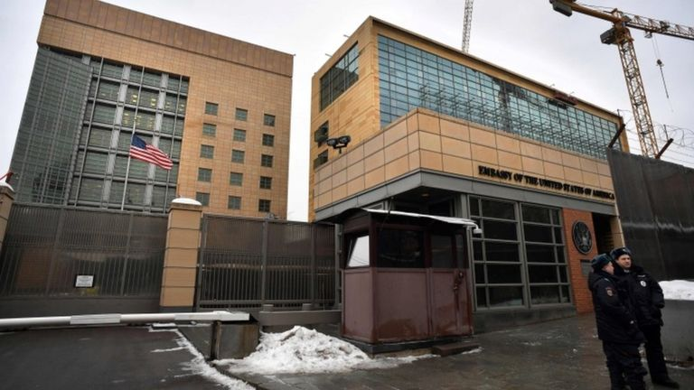
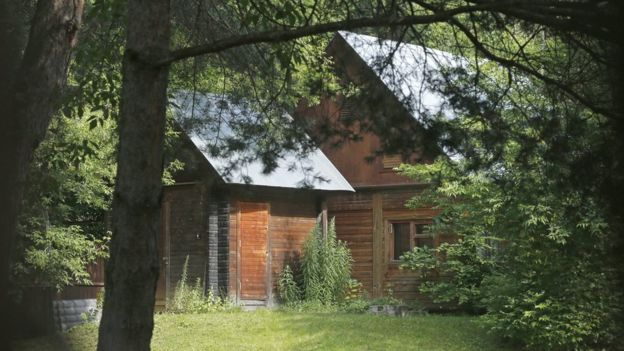
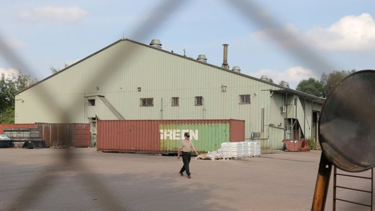

反制裁，普京下令755名美国外交官撤出俄罗斯
文章来源:http://www.bbc.com/zhongwen/simp/world-40772675
发稿日期:2017/7/31

驱逐行动将令美俄互相派驻的外交人员数量相等 (AFP)
俄罗斯总统普京（Vladimir Putin）宣布，美国驻俄外交机构的755名工作人员必须离开，以此报复美国对莫斯科加强制裁的决定。
普京于周五（7月28日）作出驱逐外交官的决定，但现在确定的是撤走的人数，这些官员最晚在9月1日必须离开俄罗斯。
这将令美国驻俄外交人员人数减少至455人，与俄罗斯驻华盛顿的外交人员数量相同。
BBC驻华盛顿记者劳拉·比克（Laura Bicker）报导，此次行动被认为是现代历史上任何一国外交人员被驱逐规模最大的一次。
BBC记者莎拉·林斯福德（Sarah Rainsford）在莫斯科报导，被逐的人数包括了全俄各地美国外交机构当中的俄罗斯雇员。
林斯福德指，美国驻莫斯科大使馆以及驻叶卡捷琳堡、海参崴和圣彼得堡的领事馆也受到影响。
美国方面表示，这一举动“不公允且令人惋惜”。
美国国务院一名官员说：“我们正在评估这一限制造成的影响，以及我们将如何回应。”
普京也在宣布的决定中加入了些许柔和的言辞，表示他不希望施行更多的措施，但同时表示，他不认为两国关系会在短时间内改善。
普京向俄罗斯电视台表示，在美国的大使馆及各领事馆工作的有超过1000人，其中“755人必须停止他们在俄罗斯的活动”。
俄罗斯还表示，正在没收美国外交官员使用的度假物业以及一处仓库。
普京指出，他可以考虑采取更多的措施，但是他说：“至今天为止我不想那样做。”
他还以叙利亚南部的“冲突降级区”为例，指这是合作带来实质性成果的范例。
不过，在两国大体关系上，普京指：“我们已经等得足够久，希望情况或许会好转。”
“但似乎即使状况会改变，也不是短期内。”
美国实施的新制裁是针对俄罗斯在2014年对克里米亚半岛的吞并，以及对美国大选的干预。
12月，奥巴马政府下令，收回两名俄罗斯外交官的住宅大院，并驱逐35名俄罗斯外交官，作为对美国民主党和希拉里·克林顿（Hillary Clinton）竞选阵营受到黑客攻击的回应。

俄罗斯已经禁止美国外交人员再使用此处位于莫斯科市郊的别墅 (EPA)

俄罗斯还将收回莫斯科一处由美国外交人员使用的仓库 (EPA)
虽然白宫反对，但美国对俄罗斯实施的新制裁提案在国会两院以压倒性优势通过。
美国情报机构相信，俄罗斯曾试图左右美国大选，使之对特朗普有利，目前美国国内正在进行多项调查，了解特朗普阵营是否有人曾与俄罗斯合谋。
俄罗斯一直否认介入过美国大选，特朗普则坚称从未与俄方共谋。